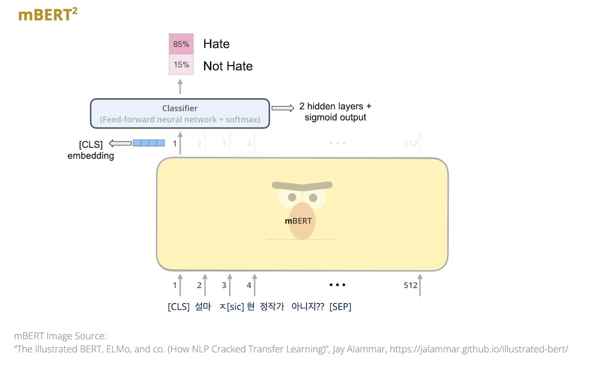
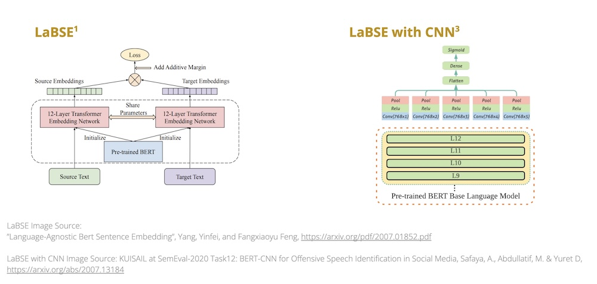
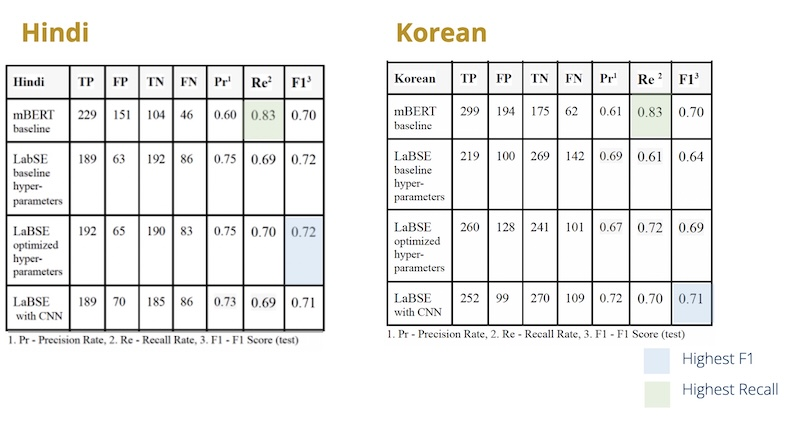

Hate Speech Detection in Hinglish & Korean Media
- There is a need for hate speech detection techniques in languages other than English.
- Compare the applicability of various transformer based language models on two linguistically different languages (as opposed to maximizing a single metric like an F1 score).
- Focus the investigation on Hindi, which is close in both cultural expression and linguistic relation to English, and Korean, which has more subtle hate expression and no linguistic relation to Western languages.
Hypothesis & Data
Hypothesis
- Due to cultural and linguistic variations (especially the subtleties seen in Korean hate speech), different model architectures may prove to be the “best-fit” models for Hindi and Korean.
- To determine our “best fit” we focused on the question of real world applicability. We found that even in research papers which shared precision, recall in addition to F1 scores, there was no key discussion around which metric was being used to determine best performance. By contrast, we propose that the key metric of interest in our analysis is the recall score. That is, in a real world application, we would rather over-flag hate speech than miss instances of hate speech, due to its negative psychological effects.
- Seeing that out-of-the-box mBERT (Multilingual Bidirectional Encoder Representations from Transformers) does not perform well in mapping multilingual sentences of the same meaning to the same vector space, we wanted to see if it would be advantageous to have cross-lingual sentence embeddings which “map” similar meaning sentences from two different languages. This piqued our interest in LaBSE (Language Agnostic BERT Sentence Embedding) to see whether it would better capture Korean subtleties[1].
- Specifically we hypothesized that Korean may see a bigger boost from the chosen mBERT baseline if a language-agnostic NLP model was used.
Data
- Labeled twitter data and labeled comments left on online news sources.
Technique (Models), Technology, and Metrics
Technique
General Approach
- Since mBERT (or a monolingual representation of mBERT such as KoBERT) is one of the state-of-the-art techniques for both Korean and Hindi hate speech detection, we use mBERT results for both Korean and Hindi as our baseline from which we would conduct further analysis.
- In addition to regular classification tasks such as hyperparameter tuning, we also experimented with zero-shot learning.
mBERT Model[2]

LaBSE Model[1][3]

Technology
- Models used
- LaBSE
- LaBSE with CNN
- mBERT
- Python
- Keras
- TensorFlow
- Jupyter Notebook
- Google Collab
Metrics
- F1 Score
- Precision
- Recall
Results Overview
Confusion Matrices

Discussion
- We found that a strong baseline can be achieved using the mBERT model for both Korean and Hindi.
- While the LaBSE frameworks performed equally or marginally better in aggregate with both Hindi and LaBSE, they did so at the expense of worsening the recall rate for gains in the precision rate.
- Notably, both Korean and Hindi achieved the optimal balance in recall and F1 scores using the mBERT model. In addition, the language-agnostic framework did not produce noticeably better results with the Korean data.
- Our original hypothesis that these languages may have varying benefits due to LaBSE frameworks was not in fact, true.
Link to paper: Hate Speech Detection
Note: Code and other details are available on request.